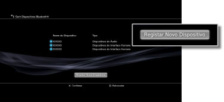

Definições > Definições de Acessórios > Gerir Dispositivos Bluetooth®
Gerir Dispositivos Bluetooth®
Registe, ou emparelhe, dispositivos compatíveis com Bluetooth® no seu sistema PS3™. Pode também gerir dispositivos Bluetooth® ligados ao seu sistema.
Registar um dispositivo compatível com Bluetooth®
1. |
Prepare o dispositivo compatível com Bluetooth® e a chave-mestra. |
|---|---|
2. |
Seleccione |
3. |
Seleccione [Gerir Dispositivos Bluetooth®]. |
4. |
Seleccione [Registar Novo Dispositivo].  |
5. |
Seleccione [Iniciar procura]. |
6. |
Seleccione o dispositivo que pretende registar, ou emparelhar, no seu sistema PS3™. |
 (Definições) >
(Definições) >  (Definições de Acessórios).
(Definições de Acessórios).Notas
- Se estiver a utilizar o número máximo de controladores sem fios, elimine os dispositivos que não está a utilizar da lista de dispositivos registados para que possa registar o novo dispositivo Bluetooth®.
- Para obter mais informações sobre o dispositivo compatível com Bluetooth®, consulte as instruções fornecidas com o dispositivo.
Gerir Dispositivos Bluetooth®
Verifique as informações sobre os dispositivos compatíveis com Bluetooth® ligados ao seu sistema PS3™ ou ligue e desligue os dispositivos. Depois de seleccionar o dispositivo que pretende gerir, prima o botão  e, em seguida, seleccione as opções no menu das opções.
e, em seguida, seleccione as opções no menu das opções.